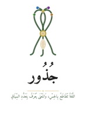

جُذورJUTHUR · MCMXXVI
ملحقٌ تطبيقيّ · Pedagogical Support Pack
روحُ الفريق · الذاكرةُ البصريّة · الابتكارُ الحركيّ · الإصدار 2.0جُسَّادُ الحُرُوفِ
الأنشطةُ الجماعيّةُ بالتصوير: تجسيدُ الحروفِ بأجسادِ الأطفالJussad al-Huruf: the Letter Embodiers
مطبعةُ جُذور · دبي · MCMXXVI
المقدمة
المُقَدِّمَةُ وَالفَلْسَفَةُ
«جُسَّادُ الحُرُوفِ» ليس نشاطًا حركيًّا فحسب، بل طقسٌ جماعيٌّ يحوّل الحرفَ من رمزٍ بصريٍّ إلى كائنٍ حيٍّ يُجسَّد. حين يشكّل الأطفال الحرفَ بأجسادهم، ويلتقط المعلّمُ الصورة، وتُعلَّق على جدار الفصل، يصير الحرفُ صديقًا ملموسًا في الذاكرة. يجمع هذا الملحق بين الحركة الإجمالية (المشي، والانحناء، والالتفاف)، والذاكرة البصرية العاطفية (الصور الجماعية)، وروح الفريق (تبادل الأدوار والتعاون).
الاسمُ من «جَسَدَ»: صار ذا جسد. و«جُسَّاد» صيغةُ مبالغة لمن يُجسّدون الحروفَ بأجسادهم ويتّخذون لها جسدًا حيًّا.
الأهداف
الأَهْدَافُ التَّرْبَوِيَّةُ
- تحويل الحرف إلى تجربة حسية جماعية. يتعاون الأطفال لتشكيل الحرف، ويتحمّل كل طفل جزءًا منه: النقطة أو الذيل أو القوس.
- تعزيز الذاكرة البصرية والعاطفية. الصور التي يظهر فيها الأطفال أنفسهم تربط الحرف بمشاعر إيجابية وتسهّل الاسترجاع.
- المرح والتنافس الإيجابي. سباقات تشكيل الحروف، وألعاب التخمين، والحرف الطائر.
- توثيق التعلّم باستمرار. جدار الحروف المصوّرة يُحدَّث أسبوعيًّا ويصير مرجعًا بصريًّا للفصل.
القسم الأول
تَشْكِيلُ الحُرُوفِ بِأَجْسَادِ الأَطْفَالِ
طريقتان أساسيتان: الاستلقاء (يُفضَّل للأعمار 4–5 سنوات)، والوقوف أو الانحناء (للأعمار 6–7). يُنصح بتجربة الطريقتين معًا لتقوية الذاكرة الحركية.
| الحرف | عدد الأطفال | وضعيات الأجساد | ملاحظات النقطة والذيل |
|---|---|---|---|
| ب | 2–3 | طفل: جذع عمودي (الخط). طفل أو اثنان يجلسون مقرفصين تحت الخط (النقطة)، ويتناوبون. | النقطة يتغير من يقوم بها كل مرة. |
| ت | 2–3 | طفل: جذع عمودي. طفل أو اثنان: قبضتان فوق الرأس (نقطتان). | النقطتان ترفعان الأيدي معًا. |
| ث | 3–4 | طفل: جذع عمودي. ثلاثة أطفال: أيدٍ مرفوعة فوق الرأس (ثلاث نقاط). | يتفقون على توزيع النقاط. |
| ج | 3–4 | طفلان يشكّلان القوس بانحناء الجذع. طفل يقف في وسط القوس كنقطة. رابع (اختياري): ذيل ممدود. | النقطة في وسط القوس. |
| ح | 2–3 | مثل الجيم بلا نقطة: طفلان بقوس متصل. | انتبهوا إلى غياب النقطة. |
| خ | 2–3 | قوس ونقطة واحدة فوقه. يرفع الطفل يده عاليًا. | النقطة فوق القوس لا داخله. |
| د | 1–2 | طفل: انحناءة بسيطة للأمام وذراع ممدودة (حرف بذراع واحدة). | يُفضَّل التقاط صورة جانبية. |
| ذ | 1–2 | طفل: انحناءة أعمق قليلًا مع لمس اللسان للأسنان (تمثيل). | صورة جانبية بتعبير الوجه. |
| ر | 1–2 | طفل: هزّ خفيف للرأس والكتفين (تمثيل اهتزاز الراء). | لقطة تعبيرية. |
| ز | 1–2 | طفل: هزّة سريعة بالجسم مع ابتسامة. | صورة مرحة. |
| س | 3–4 | أطفال يتعرّجون يمينًا ويسارًا بأجسادهم لتشكيل «أسنان» السين. | مثل ثعبان يمشي. |
| ش | 3–4 | مثل السين، مع رفع ثلاثة أطفال أيديهم (نقاط فوق الأسنان). | النقاط فوق الأسنان. |
| ص | 3–4 | جذوع ثقيلة (إطباق): يجلس الأطفال بقوة ويُثقلون أجسادهم. | صورة تعبّر عن «القوة». |
| ض | 3–4 | أطفال يميلون بجانب أجسادهم إلى جهة واحدة (جانب اللسان). | لقطة جانبية مع ميلان. |
| ط | 2–3 | قوس عالٍ جدًّا (انحناء عميق) مع رفع الأيدي عاليًا (تفخيم). | صورة قوية بقبضات الأيدي. |
| ظ | 2–3 | قوس عالٍ مع وضع اليدين على الأسنان (تمثيل الظاء). | صورة مميزة. |
| ع | 2–3 | أطفال يضيّقون حلوقهم تقليدًا (كتم صوت) بانقباض الأكتاف. | صورة تعبيرية: أيدٍ على الرقبة. |
| غ | 2–3 | أطفال يغرغرون بأجسادهم (اهتزاز خشن) ويفتحون أفواههم. | لقطة مضحكة محببة. |
| ف | 2–3 | طفل يرفرف بذراعيه كالفراشة (شفوي أسناني)، والشفة السفلى تلامس الأسنان. | صورة ديناميكية. |
| ق | 2–3 | أطفال يقفون على رؤوس أصابعهم ويرفعون أيديهم عاليًا (قوة). | صورة بطولية. |
| ك | 2–3 | أطفال ينقرون بأيديهم على رؤوسهم (تمثيل نقر الكاف). | لقطة مرحة. |
| ل | 2–3 | طفل: انثناء جانبي بطيء (تمثيل اللام اللينة). | صورة متمايلة. |
| م | 2–3 | أطفال يضمّون شفاههم ويلمسون أنوفهم (تمثيل الميم الأنفية). | صورة مقرّبة للوجوه. |
| ن | 2–3 | أطفال يلمسون أنوفهم ويصدرون صوتًا أنفيًّا (نْنْ). | صورة مرحة. |
| هـ | 1–2 | طفل يفتح فمه ويُخرج نفَسًا خفيفًا (تمثيل الهاء). | صورة هادئة. |
| و | 2–3 | أطفال يشكّلون دائرة بأيديهم (دائرة الواو) ويمدّ طفل ذراعه كذيل. | صورة تعاونية. |
| ي | 2–3 | أطفال يميلون للأعلى بأيديهم (حركة ناعمة). | صورة راقية. |
القسم الثاني
أَنْشِطَةُ النُّخْبَةِ: الِابْتِكَارُ وَالتِّقْنِيَةُ
أ. الحرف المتحدّث (رمز QR صوتي)
بعد تشكيل الحرف وتصويره، يسجّل الطفل أو المجموعة مقطعًا صوتيًّا قصيرًا (٣–٥ ثوانٍ) ينطقون فيه الحرف وكلمةً مثالًا. يُحوَّل التسجيل إلى رمز QR ويُلصق بجانب الصورة، فيستطيع كل طفل يمرّ أن يمسحه ويسمع صوت الحرف.
ب. لغز الحروف المقطّعة
تُطبع صورة الحرف مكبّرة ثم تُقصّ إلى ٤–٦ قطع (أحجية). تحصل كل مجموعة على أحجية حرفٍ مختلف وتتنافس في تركيبها. بعد التركيب تشكّل المجموعة الحرفَ بأجسادها من جديد وتصوّره.
ج. الحرف الظلّي (لعب بالضوء والظل)
في غرفة مظلمة يُسلَّط ضوء قوي على حائط أبيض، ويقف الأطفال أمام الضوء ويشكّلون الحرف بأجسادهم كما في لعبة ظلّ اليدين. يُصوَّر الظلّ فقط، لا وجوه الأطفال، ثم يخمّن بقية الفصل الحرف. حلٌّ مناسب لمن لديهم تحفّظ على تصوير الوجوه.
د. إيقاع الحروف (فرقة جُسّاد)
يُخصَّص لكل حرف إيقاع بسيط: الألف تصفيقة طويلة ممدودة، والباء تصفيقتان سريعتان، والجيم تصفيقة دائرية. وحين يشكّل الأطفال الحرف يصدرون إيقاعه بأقدامهم أو أيديهم. تُسجَّل مقاطع قصيرة وتُستخدم مرجعًا، ويمكن للفصل تقديم عرض لأولياء الأمور.
القسم الثالث
تَمَارِينُ القِيَادَةِ وَالذَّكَاءِ الجَمْعِيِّ
أ. لوحة القياس: حرفي العملاق
يُحدَّد لكل حرف طول بالسنتيمترات (الألف بطول الطفل كاملًا، والنون بنصف طوله). بعد تشكيل الحرف يُقاس طول التشكيلة ويُدوَّن على ملصق بجانب الصورة. يضيف هذا بُعدًا كميًّا رياضيًّا: قياس الأطوال والمقارنة.
ب. الحرف يأمر (الكتابة بالأمر الجسدي)
يُعطى أحد الأطفال «بطاقة أمر»: «شكّل حرف السين». لا يشكّله بنفسه، بل يوجّه زملاءه بالأوامر: «علي، أنت رأس السين. وسارة، أنتِ الأسنان الأولى». ينمّي هذا القيادة والتفكير المنطقي واستخدام لغة الأمر.
ج. بطاقات الهوية الحرفية (تمثيل الأدوار ليوم كامل)
يختار كل طفل حرفًا «يتقمّصه» يومًا كاملًا أو نصف يوم، ويحمل شارةً عليها اسم الحرف. كلما نادى عليه معلّمه أو زميله شكّل جسمه سريعًا على هيئة الحرف في الهواء. في آخر اليوم يُصوَّر «أبطال الحروف» جميعًا في صورة جماعية واحدة: فسيفساء الحروف.
القسم الرابع
الِاتِّصَالُ بِالبَيْتِ وَمَا وَرَاءَهُ
أ. صندوق الذاكرة الحسية (الحرف المحسوس)
بعد تشكيل الحرف وتصويره، تُحضر كل مجموعة شيئًا صغيرًا من البيت أو من الصندوق يبدأ بالحرف نفسه. يُصوَّر الشيء بجانب الصورة أو يوضع في صندوق شفاف بجوار جدار الصور. مثال: الباء، تفاحة.
ب. قصة الحرف قبل النوم (فيديو مسائي)
يُسجَّل مقطع قصير جدًّا (١٥ ثانية) يظهر فيه فريق الحرف وهو يشكّل الحرف وينطقه ويؤدي حركته، بموسيقى هادئة. يُرسل إلى أولياء الأمور بعد أخذ الإذن ليشاهده الطفل في البيت قبل النوم، فيصير جزءًا من روتينه ويقوّي الحفظ العاطفي.
ج. جدار الحروف المصوّرة وشهادة التكريم
يُخصَّص جدار كبير مقسّم إلى سبع مجموعات حسب مجموعات جذور. تُعلَّق الصور ويُكتب بجانب كل صورة الكلمة المثال، مع رمز QR للتسجيل الصوتي وملصق الطول والصندوق الحسي. وفي نهاية كل فصل دراسي يحصل كل طفل على «شهادة مُجسِّد الحرف» (Letter Embodier Certificate) تثبّت مشاركته في تجسيد حرف معيّن، فتعزّز الفخر والثقة بالنفس.
القسم الخامس
قَوَاعِدُ التَّصْوِيرِ الأَخْلَاقِيِّ
- إذن ولي الأمر: يُطلب إذنٌ خطي (نموذج موحّد) قبل البدء، فيه بند يسمح باستخدام الصور داخل الفصل فقط، لا للنشر على الإنترنت أو وسائل التواصل.
- عدم نشر الصور خارج الفصل: لا تُرسل الصور إلى مجموعات الأهل ولا تُنشر في إعلانات المدرسة إلا بموافقة كتابية خاصة لكل حالة.
- الصور أداة تعليمية مؤقتة: يكون التصوير بأجهزة المدرسة فقط لا بالهواتف الشخصية، وتُحذف المواد في نهاية كل فصل دراسي أو تُؤرشف على جهاز آمن داخل المدرسة.
- الفيديو والصوت: يشمل الإذنُ الصورَ والفيديو والتسجيلَ الصوتيّ، ويسري عليها ما سبق، ولا تُرسل إلى أولياء الأمور إلا بإذنٍ خاص بكل حالة.
- سحب الموافقة: لوليّ الأمر سحبُ موافقته في أي وقت بإبلاغٍ كتابي، وتُحذف المادةُ خلال سبعة أيام.
- الأولوية لما لا يُظهر الوجوه: يُفضَّل تصوير الظلال والأيدي والحروف المشكَّلة دون وجوه، ولا تُلتقط صورٌ مقرّبة للوجوه إلا بإذنٍ صريح.
- بديل التصوير عند تعذّر الإذن: يُرسم الحرف المشكَّل رسمًا تخطيطيًّا بدل الصور الحقيقية، مع الحفاظ على روح النشاط.
القسم السادس
التَّكَامُلُ مَعَ مَنْظُومَةِ جُذُور
- ملحق الحروف العملاقة (2.0، قيد الإعداد): للأنشطة الفردية بحروف أرضية كبيرة. يُنصح بالفردية أولًا ثم الجماعية.
- ملحق الوعي الكتابي (4.0): بعد تشكيل الحرف وتصويره ينتقل الطفل إلى محطات المنقوط والبارز والمحفور ليكتب الحرف بنفسه.
- ملحق السماع (12.0): يمكن تسجيل أصوات الأطفال وهم ينطقون الحرف أثناء تشكيله، بعد الإذن، وربطه بالصورة.
- الكتاب المعدّل (الفصل الثالث): «جُمْبَازُ الحُرُوفِ» للأنشطة الفردية و«جُسَّادُ الحُرُوفِ» للأنشطة الجماعية وجهان لعملة واحدة: الأول للاستكشاف الفردي والثاني للذاكرة الجماعية.
القسم السابع
خُطَّةُ البَحْثِ المُقْتَرَحَةُ
- العينة: ثلاثة فصول، نحو 90 طفلًا، أعمارهم 5–7 سنوات.
- التصميم: شبه تجريبي (قياس قبلي وبعدي).
- المدة: فصل دراسي واحد (12 أسبوعًا).
- الأدوات: اختبار تسمية الحروف، واستبيان رضا المعلّمين، وعدد مرات رجوع الأطفال إلى جدار الصور لتذكّر الحرف، ومؤشر اللذاذة (Lathatha Index).
- الفرضية: استخدام صور الحروف المشكَّلة بأجساد الأطفال يحسّن طلاقة التسمية والاحتفاظ بالحروف مقارنةً بالطرق التقليدية، ويعزّز روح الفريق والتعاون.
Jussad al-Huruf turns the letter from a visual symbol into a living body: children form it together, the teacher photographs it, and the photo joins the classroom wall. Ten activities, a full 28-letter table, ethical-photography rules and a research plan. Based on Concrete Reading Theory (CRT).
مطبعةُ جُذور · دبي · MCMXXVI · صمّمه وطوّره د. عادل ف. عامر · Designed and developed by Dr. Adel F. Amer · جُسَّادُ الحُرُوفِ